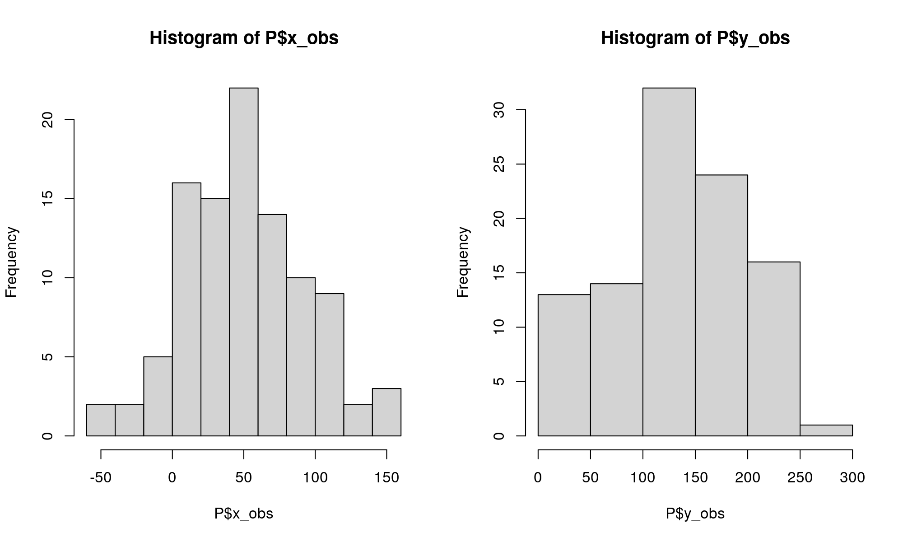
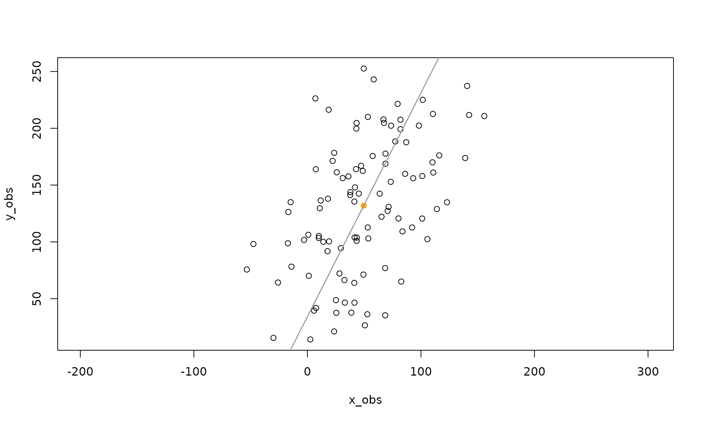
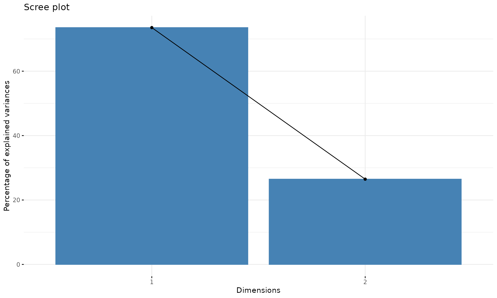
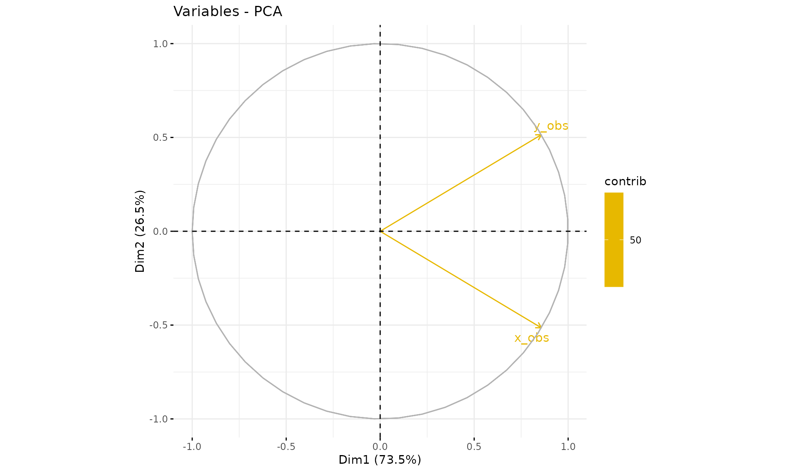
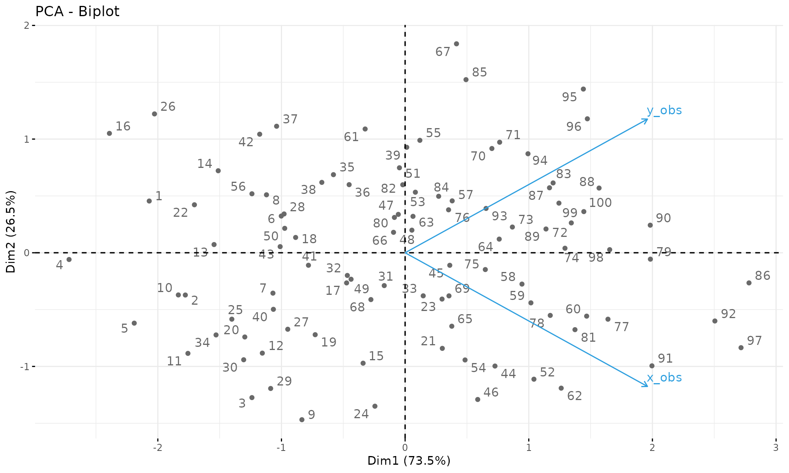
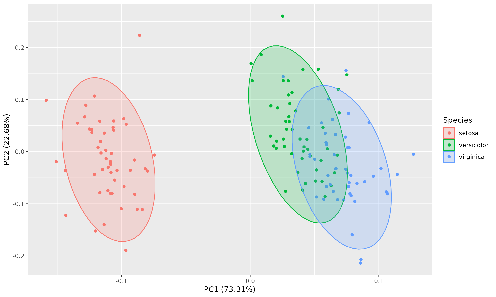
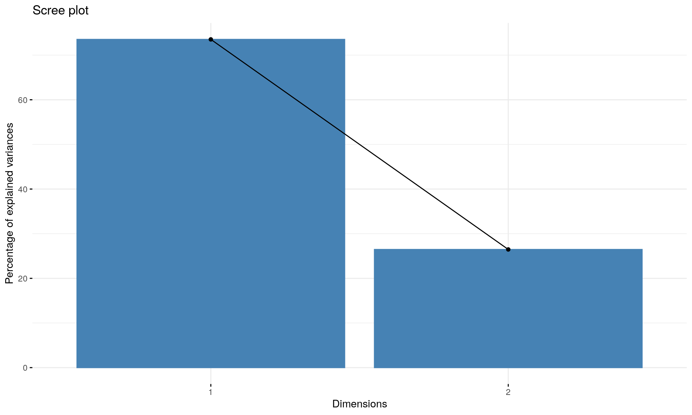

Principal Component Analysis in R; PCA of covariance or correlation matrix
Aedin Culhane
July 15, 2021
Source:vignettes/b_PCA.Rmd
b_PCA.RmdR libraries
Install, if necessary, and load necessary libraries and set up R session. If you are running the docker container or using an instance on the orchestra platform, then you should have these libraries installed already.
#if (!requireNamespace("BiocManager", quietly = TRUE)) #install.packages("BiocManager")
library(magrittr)
library(ade4)
library(FactoMineR)
library(factoextra)
library(ggplot2)PCA in R
In R, there are several functions in many different packages that allow us to perform PCA. We will not review all of these, however will provide examples of the following;
-
svd()(stats) ** on centered data** -
prcomp()(stats) -
princomp()(stats) ** on cor matrix ** -
PCA()(FactoMineR) -
dudi.pca()(ade4)
Note, although prcomp sets scale=FALSE for consistency with S, in general scaling is advised. We will demonstrate both prcomp of unscaled and scaled data. Scaling the variables to have unit variance is advised.
Give an input matrix, P and a resulting output, res
| Function | loadings | scores | plot |
|---|---|---|---|
prcomp(P, center=TRUE, scale=TRUE) |
res$rotation |
res$x |
biplot(res) |
princomp(P, cor=TRUE) |
res$loadings |
res$scores |
biplot(res) |
PCA(P) |
res$svd$V |
res$ind$coord |
plot(res) |
dudi.pca(P, center=TRUE, scale=TRUE) |
res$c1 |
res$li |
scatter(res) |
With ade4::dudi.pca and prcomp the default is center = TRUE, scale = TRUE.
With princomp, cor=FALSE is the default.
A simple toy dataset
We will demonstrate some of these and how the methods relate but first we will create a simple minimal cloud of points; two vectors, x,y of length 100.
set.seed(2) #sets the seed for random number generation.
x <- 1:100 #creates a vector x with numbers from 1 to 100
ex <- rnorm(100, 0, 30) #100 normally distributed random numbers, mean=0, sd=30
ey <- rnorm(100, 0, 30) # 100 normally distributed random numbers, mean=0, sd=30
y <- 30 + 2 * x #sets y to be a vector that is a linear function of x
x_obs <- x + ex #adds "noise" to x
y_obs <- y + ey #adds "noise" to y
# Bind both vectors in a matrix of toy data called P
P <- data.frame(x_obs=x_obs,y_obs=y_obs) #places points in matrix
summary(P)## x_obs y_obs
## Min. :-53.33 Min. : 14.13
## 1st Qu.: 21.44 1st Qu.: 97.22
## Median : 44.37 Median :134.91
## Mean : 49.58 Mean :131.88
## 3rd Qu.: 77.91 3rd Qu.:174.29
## Max. :155.78 Max. :252.63Basic histogram of the two distributions:

Difference between covariance-based and correlation-based PCA
When performing PCA, you will encounter, two forms of PCA; PCA of a covariance or correlation matrix.
The difference between these is can be most easily understood in the data pre-processing. In the first vignette in this package, PCA was computed as a singular value decomposition (SVD) of a column centered, scaled matrix. This was PCA of the correlation matrix. If the matrix is centered but not scaled, it is PCA of the covariance matrix.
- PCA of a correlation matrix = svd of scaled, centered, matrix (z-score matrix)
covariance-based PCA
PCA of a covariance matrix can be computed as svd of unscaled, centered, matrix
- Center a matrix Recall we had two vector x_obs, y_obs. We can center these columns by subtracting the column mean from each object in the column. We can perform PCA of the covariance matrix is several ways.
SVD of the centered matrix
eigenanalysis of the centered, covariance matrix
using prcomp with scale=FALSE (which is the default)
svd of centered data.
\[\$d\] returns the singular values, not the eigenvalues.
## [1] 4110.45 1189.45Eigen on a covariance matrix
## eigen() decomposition
## $values
## [1] 4110.45 1189.45
##
## $vectors
## [,1] [,2]
## [1,] 0.4527354 -0.8916449
## [2,] 0.8916449 0.4527354prcomp
This is the same as prcomp PCA of the unscaled data. By default prcomp will perform decomposition of data that is centered but not scaled (center = TRUE, scale = FALSE)
prcomp(P)## Standard deviations (1, .., p=2):
## [1] 64.11279 34.48841
##
## Rotation (n x k) = (2 x 2):
## PC1 PC2
## x_obs 0.4527354 -0.8916449
## y_obs 0.8916449 0.4527354Note that the eigenvalues are provided as;
prcomp(P)$sdev^2 ## [1] 4110.45 1189.45and this is also similar to princomp
princomp(P)$sdev^2 ## Comp.1 Comp.2
## 4069.345 1177.556eigenvector from the eigenanalysis of the covariance matrix equal the rotation matrix of prcomp.
print("$v right singular vectors of svd of centered matrix")## [1] "$v right singular vectors of svd of centered matrix"
svd(Mx)$v## [,1] [,2]
## [1,] 0.4527354 -0.8916449
## [2,] 0.8916449 0.4527354
print("eigen of covariance matrix")## [1] "eigen of covariance matrix"
eigen(MCov)$vectors ## [,1] [,2]
## [1,] 0.4527354 -0.8916449
## [2,] 0.8916449 0.4527354
print("prcomp of centered but not scaled (default options) matrix")## [1] "prcomp of centered but not scaled (default options) matrix"
prcomp(P)$rotation## PC1 PC2
## x_obs 0.4527354 -0.8916449
## y_obs 0.8916449 0.4527354The right singular vectors are the eigenvectors of MtM. Next I plot the principal axes (yellow):
plot(P,asp=1,col=1) #plot points
points(x=mean(x_obs),y=mean(y_obs),col="orange", pch=19) #show center
lines(x_obs,eigenVectors[2,1]/eigenVectors[1,1]*Mx[x]+mean(y_obs),col=8)
This shows the first principal axis. Note that it passes through the mean as expected. The ratio of the eigenvectors gives the slope of the axis.
Next plot the second principal axis, orthogonal to the first
plot(P,asp=1,col=1) #plot points
points(x=mean(x_obs),y=mean(y_obs),col="orange", pch=19) #show center
lines(x_obs,eigenVectors[2,1]/eigenVectors[1,1]*Mx[x]+mean(y_obs),col=8)
lines(x_obs,eigenVectors[2,2]/eigenVectors[1,2]*Mx[x]+mean(y_obs),col=8) shows the second principal axis, which is orthogonal to the first (recall that the matrix Vt in the singular value decomposition is orthogonal). This can be checked by noting that the second principal axis is also, as the product of orthogonal slopes is -1.
Correlation-based PCA
Correlation-based PCA can be computed by singular value decomposition (svd) of centered and scaled matrix. So we can repeat the code above but scale and center the data with scale(P, center=TRUE, scale=TRUE). By default scale will center and scale
scale## function (x, center = TRUE, scale = TRUE)
## UseMethod("scale")
## <bytecode: 0x5558b2d38688>
## <environment: namespace:base>svd of z-score scaled data.
## [1] 12.065827 7.239877
p0$v #the right singular vectors## [,1] [,2]
## [1,] 0.7071068 -0.7071068
## [2,] 0.7071068 0.7071068Recall, SVD returns a list with components
d = a vector containing the singular values of x, of length min(n, p), in descending order
u = a matrix whose columns contain the left singular vectors of x, present if nu > 0. Dimension c(n, nu).
v = a matrix whose columns contain the right singular vectors of x, present if nv > 0. Dimension c(p, nv).
where the product of these matrix \[X = U D V'\] recovers the original matrix;
## [,1] [,2]
## [1,] -1.78511160 -1.1414577
## [2,] -0.99401402 -1.5197211
## [3,] 0.02497959 -1.7769963
## [4,] -1.87979464 -1.9636443
## [5,] -1.11114369 -1.9868817
## [6,] -0.93661695 -0.4798394which equals the scaled matrix that was decomposed using svd
scale(P)%>% head## x_obs y_obs
## [1,] -1.78511160 -1.1414577
## [2,] -0.99401402 -1.5197211
## [3,] 0.02497959 -1.7769963
## [4,] -1.87979464 -1.9636443
## [5,] -1.11114369 -1.9868817
## [6,] -0.93661695 -0.4798394The elements of d are formed by taking the sum of the squares of the principal components but not dividing by the rank. Therefore we can divide by the rank, which is user-defined or min of the ncol or nrow of the matrix -1.
The diagonal elements of d from the SVD are proportional to the standard deviations (sdev) returned by PCA.
p0$d^2/(nrow(p0$u) - 1)## [1] 1.4705472 0.5294528
eigenValues= p0$d^2/(nrow(p0$u) - 1)
eigenValues## [1] 1.4705472 0.5294528Summary of output from svd
svdSummary<-function(svdRes,sf=4){
if(is(svdRes,"prcomp")){
eigenvalue=svdRes$sdev^2
}else{
#d=signif(svdRes$d,sf)
eigenvalue= svdRes$d^2/(nrow(svdRes$u) - 1)
}
data.frame(cbind(
eigenvalues=signif(eigenvalue,sf),
sd = signif(sqrt(eigenvalue),sf),
variance.percent = paste0(signif((eigenvalue/sum(eigenvalue)),2)*100,"%"),
cumulative.variance.percent = paste0(cumsum(signif((eigenvalue/sum(eigenvalue)),2))*100,"%")))
}
eigSum.svd <-svdSummary(p0)
eigSum.svd ## eigenvalues sd variance.percent cumulative.variance.percent
## 1 1.471 1.213 74% 74%
## 2 0.5295 0.7276 26% 100%prcomp (scale = TRUE)
First stats::prcomp. The eigenvectors are stored in $rotation. Note these are the same as svd$v on scale data
p1<- prcomp(P, scale = TRUE)
p1$rotation## PC1 PC2
## x_obs 0.7071068 -0.7071068
## y_obs 0.7071068 0.7071068
(p1$rotation== p0$v)## PC1 PC2
## x_obs TRUE TRUE
## y_obs TRUE TRUEeigenvalues - $sdev eigenvector - $rotation
names(p1)## [1] "sdev" "rotation" "center" "scale" "x"
summary(p1)## Importance of components:
## PC1 PC2
## Standard deviation 1.2127 0.7276
## Proportion of Variance 0.7353 0.2647
## Cumulative Proportion 0.7353 1.0000To calculated eigenvalues information manually here is the code;
sf=4
eigs= p1$sdev^2
eigSum.pca= cbind(
eigenvalue=eigs,
sd = sqrt(eigs),
variance.percent = eigs/sum(eigs),
cumulative.variance.percent = cumsum(eigs)/sum(eigs))
eigSum.pca## eigenvalue sd variance.percent cumulative.variance.percent
## [1,] 1.4705472 1.212661 0.7352736 0.7352736
## [2,] 0.5294528 0.727635 0.2647264 1.0000000which is the same as;
eigSum.svd## eigenvalues sd variance.percent cumulative.variance.percent
## 1 1.471 1.213 74% 74%
## 2 0.5295 0.7276 26% 100%If we had more components, we could generate a scree plot. Its not very useful with 2 components, but here is the code
Caculate the Proportion of Variance explained by each component (eig sum Proportion above)
ProportionVariance = p0$d^2 /sum(p0$d^2 )
ProportionVariance## [1] 0.7352736 0.2647264
princomp
princomp was written for compatiblity with S-PLUS however it is not recommended. Its is better to use prcomp or svd. That is because by default princomp performs a decompostion of the covariance not correlation matrix. princomp can call eigen on the correlation or covariance matrix. Its default calculation uses divisor N for the covariance matrix.
p2<-stats::princomp(P)
p2$sd^2## Comp.1 Comp.2
## 4069.345 1177.556sqrt of eigenvalues
p2$sdev## Comp.1 Comp.2
## 63.79142 34.31553eigenvectors
p2$loadings##
## Loadings:
## Comp.1 Comp.2
## x_obs 0.453 0.892
## y_obs 0.892 -0.453
##
## Comp.1 Comp.2
## SS loadings 1.0 1.0
## Proportion Var 0.5 0.5
## Cumulative Var 0.5 1.0
head(p2$scores,2)## Comp.1 Comp.2
## [1,] -94.48864 -36.682917
## [2,] -99.33030 3.293649Set cor = TRUE in the call to princomp in order to perform PCA on the correlation matrix (instead of the covariance matrix)
p2b<-princomp(P, cor = TRUE)
p2b$sdev^2## Comp.1 Comp.2
## 1.4705472 0.5294528
p2b$loadings##
## Loadings:
## Comp.1 Comp.2
## x_obs 0.707 0.707
## y_obs 0.707 -0.707
##
## Comp.1 Comp.2
## SS loadings 1.0 1.0
## Proportion Var 0.5 0.5
## Cumulative Var 0.5 1.0For more info on prcomp v princomp see http://www.sthda.com/english/articles/31-principal-component-methods-in-r-practical-guide/118-principal-component-analysis-in-r-prcomp-vs-princomp/
FactoMineR
FactoMineR::PCA calls svd to compute the PCA
p3<-FactoMineR::PCA(P)The eigenvalues, same as eigSum and eigSum.svd above
t(p3$eig)## comp 1 comp 2
## eigenvalue 1.470547 0.5294528
## percentage of variance 73.527362 26.4726382
## cumulative percentage of variance 73.527362 100.0000000correlations between variables and PCs
p3$var$coord ## Dim.1 Dim.2
## x_obs 0.857481 0.5145157
## y_obs 0.857481 -0.5145157
ade4::dudi.pca
First ade4::dudi.pca scales the data and stores the scaled data in $tab. In PCA this will be almost equivalent to scale. However there is a minor difference (see https://pbil.univ-lyon1.fr/R/pdf/course2.pdf). ade4 uses the duality diagram framework for computing pca and other matrix factorizations (so it provides lw and cw which are the row and columns weights, respectively). See Cruz and Holmes 2011 for a wonderful tutorial on the duality diagram framework https://www.ncbi.nlm.nih.gov/pmc/articles/PMC3265363/
p4<-ade4::dudi.pca(P, scannf = FALSE, nf=2) # save 2 axis by default,
head(p4$tab) # centered/scaled data. ## x_obs y_obs
## 1 -1.79410466 -1.1472082
## 2 -0.99902168 -1.5273772
## 3 0.02510543 -1.7859484
## 4 -1.88926469 -1.9735368
## 5 -1.11674143 -1.9968913
## 6 -0.94133545 -0.4822568## x_obs y_obs
## [1,] -1.78511160 -1.1414577
## [2,] -0.99401402 -1.5197211
## [3,] 0.02497959 -1.7769963
## [4,] -1.87979464 -1.9636443
## [5,] -1.11114369 -1.9868817
## [6,] -0.93661695 -0.4798394The values used for centering are stored in cent, it is equal to the colMeans. norm provides the sd of the columns
p4$cent == colMeans(P)## x_obs y_obs
## TRUE TRUE## [1] TRUEThe summary printout is equivalent to P3 (p3$eig) above. The eigenvales are stored in p4$eig.
summary(p4)## Class: pca dudi
## Call: ade4::dudi.pca(df = P, scannf = FALSE, nf = 2)
##
## Total inertia: 2
##
## Eigenvalues:
## Ax1 Ax2
## 1.4705 0.5295
##
## Projected inertia (%):
## Ax1 Ax2
## 73.53 26.47
##
## Cumulative projected inertia (%):
## Ax1 Ax1:2
## 73.53 100.00
p4$eig## [1] 1.4705472 0.5294528
p4$c1## CS1 CS2
## x_obs 0.7071068 -0.7071068
## y_obs 0.7071068 0.7071068
p4$co## Comp1 Comp2
## x_obs 0.857481 -0.5145157
## y_obs 0.857481 0.5145157The cumulative % of variance explained by each component:
(k <- 100 * p4$eig/sum(p4$eig))## [1] 73.52736 26.47264
cumsum(k)## [1] 73.52736 100.00000nf is an integer giving the number of axes kept. nf will always be smaller than the smaller of: the number of rows or number of columns of the matrix; minus 1.
p4$nf## [1] 2c1 gives the variables’ coordinates, normed to 1. It is also called the coefficients of the combination or the loadings of variables.
Equally, the output matrix l1 gives the individuals’ coordinates, normed to 1. It is also called the loadings of individuals.
p4$c1## CS1 CS2
## x_obs 0.7071068 -0.7071068
## y_obs 0.7071068 0.7071068
sum(p4$cw * p4$c1$CS1^2)## [1] 1co gives the variables’ coordinates, normed to the square root of the eigenvalues.
p4$co## Comp1 Comp2
## x_obs 0.857481 -0.5145157
## y_obs 0.857481 0.5145157
sum(p4$cw * p4$co$Comp1^2)## [1] 1.470547The link between c1 and co is defined by:
p4$c1$CS1 * sqrt(p4$eig[1])## [1] 0.857481 0.857481Comparision of results of these different PCA methods
There is also a nice package called factoextra. This works all of the above classes
library(factoextra)
res<- list(p0,p1,p2,p2b,p3,p4)
names(res) = c('svd_scaledData','prcomp', 'princomp','princomp_cov', 'FactoMineR', 'ade4')
e<-sapply(res[-1],get_eig)
# get_eig doesn't work on svd
svd.e<- eigSum.svd[c(1,3,4)]
colnames(svd.e)<- names(e[[1]])
e<- c(list(svd=svd.e),e)
e## $svd
## eigenvalue variance.percent cumulative.variance.percent
## 1 1.471 74% 74%
## 2 0.5295 26% 100%
##
## $prcomp
## eigenvalue variance.percent cumulative.variance.percent
## Dim.1 1.4705472 73.52736 73.52736
## Dim.2 0.5294528 26.47264 100.00000
##
## $princomp
## eigenvalue variance.percent cumulative.variance.percent
## Dim.1 4069.345 77.55712 77.55712
## Dim.2 1177.556 22.44288 100.00000
##
## $princomp_cov
## eigenvalue variance.percent cumulative.variance.percent
## Dim.1 1.4705472 73.52736 73.52736
## Dim.2 0.5294528 26.47264 100.00000
##
## $FactoMineR
## eigenvalue variance.percent cumulative.variance.percent
## Dim.1 1.4705472 73.52736 73.52736
## Dim.2 0.5294528 26.47264 100.00000
##
## $ade4
## eigenvalue variance.percent cumulative.variance.percent
## Dim.1 1.4705472 73.52736 73.52736
## Dim.2 0.5294528 26.47264 100.00000Visualization and Exploration of results
The github package explor is useful for exploring data. It includes plotting functions for many packages including ade4, FactoMineR and base R functions prcomp and princomp;
For now on, it is usable the following types of analyses :
| Analysis | Function | Package | Notes |
|---|---|---|---|
| Principal Component Analysis | PCA | FactoMineR | - |
| Correspondance Analysis | CA | FactoMineR | - |
| Multiple Correspondence Analysis | MCA | FactoMineR | - |
| Principal Component Analysis | dudi.pca | ade4 | Qualitative supplementary variables are ignored |
| Correspondance Analysis | dudi.coa | ade4 | - |
| Multiple Correspondence Analysis | dudi.acm | ade4 | Quantitative supplementary variables are ignored |
| Specific Multiple Correspondance Analysis | speMCA | GDAtools | Supplementary variables are not supported |
| Multiple Correspondance Analysis | mca | MASS | Quantitative supplementary variables are not supported |
| Principal Component Analysis | princomp | stats | Supplementary variables are ignored |
| Principal Component Analysis | prcomp | stats | Supplementary variables are ignored |
#if(!"explor" %in% rownames(installed.packages())) #devtools::install_github("juba/explor")
#if(!"scatterD3" %in% rownames(installed.packages()))
#devtools::install_github("juba/scatterD3")
factoextra
Plotting using factoextra
fviz_eig(p1)
fviz_pca_var(p1,
col.var = "contrib", # Color by contributions to the PC
gradient.cols = c("#00AFBB", "#E7B800", "#FC4E07"),
repel = TRUE # Avoid text overlapping
)
fviz_pca_biplot(p1, repel = TRUE,
col.var = "#2E9FDF", # Variables color
col.ind = "#696969" # Individuals color
)
Drawing Ellispe
Example using iris dataset
Easiest approach:
library(ggplot2)
library(ggfortify)
ggplot2::autoplot(ir.pca, data=iris, colour="Species", frame=TRUE, frame.type="t") 
library(ggplot2)
ggplot(ir.pca,aes(PC1, PC2))+
geom_point() +
stat_density_2d(aes(alpha=..level.., fill=iris$Species), bins=4, geom="polygon")
stat_ellipse() and stat_density_2d() have a lot of options. See manual pages
multivariate normal distribution.
stat_ellipse(type = "norm", linetype = 2) Euclid, is a circle with radius equal to the level parameter
stat_ellipse(type = "euclid", level = 3) multivariate t-distribution
stat_ellipse(type = "t") ## R version 4.1.0 (2021-05-18)
## Platform: x86_64-pc-linux-gnu (64-bit)
## Running under: Ubuntu 20.04.2 LTS
##
## Matrix products: default
## BLAS/LAPACK: /usr/lib/x86_64-linux-gnu/openblas-pthread/libopenblasp-r0.3.8.so
##
## locale:
## [1] LC_CTYPE=en_US.UTF-8 LC_NUMERIC=C
## [3] LC_TIME=en_US.UTF-8 LC_COLLATE=en_US.UTF-8
## [5] LC_MONETARY=en_US.UTF-8 LC_MESSAGES=C
## [7] LC_PAPER=en_US.UTF-8 LC_NAME=C
## [9] LC_ADDRESS=C LC_TELEPHONE=C
## [11] LC_MEASUREMENT=en_US.UTF-8 LC_IDENTIFICATION=C
##
## attached base packages:
## [1] stats graphics grDevices utils datasets methods base
##
## other attached packages:
## [1] ggfortify_0.4.12 factoextra_1.0.7 ggplot2_3.3.5 FactoMineR_2.4
## [5] ade4_1.7-17 magrittr_2.0.1 knitr_1.33
##
## loaded via a namespace (and not attached):
## [1] sass_0.4.0 tidyr_1.1.3 jsonlite_1.7.2
## [4] carData_3.0-4 bslib_0.2.5.1 assertthat_0.2.1
## [7] highr_0.9 cellranger_1.1.0 yaml_2.2.1
## [10] ggrepel_0.9.1 pillar_1.6.2 backports_1.2.1
## [13] lattice_0.20-44 glue_1.4.2 digest_0.6.27
## [16] ggsignif_0.6.2 colorspace_2.0-2 htmltools_0.5.1.1
## [19] pkgconfig_2.0.3 broom_0.7.9 haven_2.4.3
## [22] purrr_0.3.4 scales_1.1.1 openxlsx_4.2.4
## [25] rio_0.5.27 tibble_3.1.3 generics_0.1.0
## [28] farver_2.1.0 car_3.0-11 ellipsis_0.3.2
## [31] ggpubr_0.4.0 DT_0.18 cachem_1.0.5
## [34] withr_2.4.2 readxl_1.3.1 crayon_1.4.1
## [37] memoise_2.0.0 evaluate_0.14 fs_1.5.0
## [40] fansi_0.5.0 MASS_7.3-54 rstatix_0.7.0
## [43] forcats_0.5.1 foreign_0.8-81 textshaping_0.3.5
## [46] tools_4.1.0 data.table_1.14.0 hms_1.1.0
## [49] lifecycle_1.0.0 stringr_1.4.0 munsell_0.5.0
## [52] cluster_2.1.2 zip_2.2.0 isoband_0.2.5
## [55] flashClust_1.01-2 compiler_4.1.0 pkgdown_1.6.1
## [58] jquerylib_0.1.4 systemfonts_1.0.2 rlang_0.4.11
## [61] grid_4.1.0 htmlwidgets_1.5.3 leaps_3.1
## [64] labeling_0.4.2 rmarkdown_2.9 gtable_0.3.0
## [67] abind_1.4-5 DBI_1.1.1 curl_4.3.2
## [70] R6_2.5.0 gridExtra_2.3 dplyr_1.0.7
## [73] fastmap_1.1.0 utf8_1.2.2 rprojroot_2.0.2
## [76] ragg_1.1.3 desc_1.3.0 stringi_1.7.3
## [79] Rcpp_1.0.7 vctrs_0.3.8 scatterplot3d_0.3-41
## [82] tidyselect_1.1.1 xfun_0.24